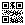

Show this page on your monitor (or print it and stick it on the monitor bezel). The glasses camera takes a photo every 20 seconds, finds the QR code, and estimates the eye-to-screen distance from its apparent size. The QR payload is WH:<millimetres>, which tells the glasses the marker's nominal side length.
A larger marker is more stable at longer distances; 50 mm suits 40–90 cm. The physical size on screen depends on your monitor's DPI, so compare the ruler below with a real ruler, or simply run "Calibrate distance at 60 cm" on the glasses once: calibration cancels any marker-size error.
